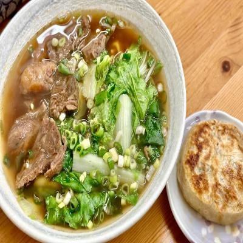

隨緣麵食館
隨緣麵食館
推薦程度： ★ ★ ★ ★ ☆
推薦程度： ★ ★ ★ ★ ☆
店家介紹
隨緣麵食館是一家位於繁華市區的小型餐廳，專注於提供新鮮美味的麵食料理。我們的餐廳環境舒適，氛圍溫馨，是您與家人、朋友聚餐或輕鬆用餐的理想場所。菜單豐富多樣，提供各種口味的麵食選擇，滿足不同客人的需求。無論您喜歡濃郁的湯底還是清爽的拌麵，都能在我們的菜單中找到心儀的選擇。我們的廚師團隊擁有豐富的經驗，精心研發出多款特色麵食，保證讓您的味蕾得到最大的滿足。在隨緣麵食館，我們非常重視食材的新鮮和品質。我們選用最優質的小麥粉和新鮮食材，確保每一道菜都能呈現出最好的口感和風味。我們注重細節，追求完美，並且不斷優化菜單，以確保客人始終能享受到最好的餐點。此外，隨緣麵食館也提供多種配菜和小吃，讓您的用餐體驗更加豐富。您可以品嚐到新鮮的餛飩、爽口的涼拌菜、營養豐富的小菜等等。無論您是素食主義者還是肉食愛好者，我們的菜單都能為您提供多種選擇。隨緣麵食館歡迎您的光臨！
美食品項
| 品項 | 描述 |
|
豬肉餡餅是一種美味的台灣小吃，深受大眾喜愛。它的外觀看起來像一個小巧的酥皮包裹著豐富的豬肉餡料。酥皮酥脆，色澤金黃，經過烤製後散發出誘人的香氣。每一口咬下，脆皮的口感與鮮嫩多汁的豬肉餡料完美融合，帶來令人滿足的口味享受。豬肉餡餅的內餡主要使用優質的豬肉，加入各種香料和調味料調製而成。餡料鮮嫩多汁，滋味豐富，讓人忍不住一口接一口。有些店家還會根據個人口味添加蔬菜或其他配料，增添口感和風味的層次。
|
|
|
水餃是我們餐廳的招牌美食之一。每顆水餃皮薄餡多，以鮮嫩豬肉為主要餡料，搭配各種新鮮蔬菜和調味料精心調製而成。水餃皮經過手工製作，保持了彈性和口感，讓每一口都帶給您滿滿的鮮美滋味。品嚐我們的水餃，您可以感受到餡料的鮮香和皮薄的獨特口感。 |
|
 |
一窩絲餅是台灣著名的小吃之一，其獨特的外觀和口感讓人難以抗拒。金黃酥脆的麵皮上布滿了細細的麵絲，讓人垂涎欲滴。每一口咬下去時，酥脆的口感迅速散開，絲絲麵線彷彿在口中跳躍舞動，帶來愉悅的咀嚼感受。而內餡的選擇多樣，可以有豬肉、牛肉、雞肉或蔬菜等，每種口味都為一窩絲餅增添了獨特的風味。無論是在熱鬧的夜市或是街頭攤販，一窩絲餅總是吸引著許多食客。不僅滿足了人們的味蕾，更成為了台灣美食文化中不可或缺的一部分。無論你是當地居民還是遊客，一窩絲餅絕對是值得一試的美食之一，讓你享受到道地的台灣風味。 |
|  |
牛肉麵是我們餐廳的招牌主食之一。我們使用優質的牛肉搭配特調湯底和彈牙的麵條，以及豐富的配料，呈現出一碗美味而滿足的牛肉麵。湯頭鮮美濃郁，牛肉軟嫩多汁，搭配融化在口的麵條，每一口都能帶給您舌尖的享受。品嚐我們的牛肉麵，您一定會愛上這道經典的麵食料理。 |